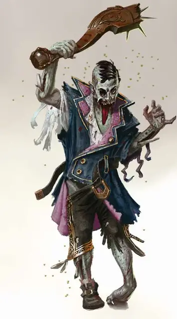

Диббук
Dybbuk
Среднее Исчадие (Демон), хаотично-злое

Класс Доспеха 14
Хиты 37 (5к8 + 15)
Скорость 0 футов, летая 40 футов (парит)
| мод | спас | ||
|---|---|---|---|
| СИЛ | 6 | −2 | −2 |
| ЛОВ | 19 | +4 | +4 |
| ТЕЛ | 16 | +3 | +3 |
| мод | спас | ||
|---|---|---|---|
| ИНТ | 16 | +3 | +3 |
| МДР | 15 | +2 | +2 |
| ХАР | 14 | +2 | +2 |
Навыки Восприятие +4, Запугивание +4, Обман +6
Сопротивление урону звук, кислота, огонь, холод, электричество; дробящий, колющий, рубящий
Иммунитет к урону яд
Иммунитет к состояниям окаменение, опутанность, отравление, сбивание с ног, захват, паралич, очарование, испуг, истощение
Чувства тёмное зрение 120 футов, пассивное Восприятие 14
Языки Общий, Бездны, Телепатия 120 фт.
Опасность 4 (1100 опыта)
Бонус мастерства +2
Среда обитания Город, Арктика
Особенности
Бестелесное перемещение. Диббук может передвигаться сквозь других существ и объекты, как если бы они были труднопроходимой местностью. Он получает 5 (1к10) урона силовым полем, если оканчивает свой ход внутри объекта.
Сопротивление магии. Диббук совершает с преимуществом спасброски от заклинаний и прочих магических эффектов.
Врождённое колдовство. Базовой характеристикой диббука является Харизма (Сл спасброска от заклинания 12). Он может накладывать следующие заклинания, не нуждаясь в материальных компонентах:
• Неограниченно: переносящая дверь [dimension door]
• 3/день каждое: ужас [fear], воображаемая сила [phantasmal force]
Осквернить труп. Диббук использует бонусное действие, когда он владеет трупом, чтобы он сделал что-то неестественное вроде рвоты кровью, поворота головы на 360 градусов, или заставить четвероногое существо двигаться на двух ногах. Каждый зверь или гуманоид, увидевший это должен преуспеть в спасброске Мудрости Сл 12, или станет Испуганным диббуком на 1 минуту. Испуганное существо может повторять спасбросок в конце каждого своего хода, заканчивая эффект при успехе. Существо, успешно совершившее спасбросок, становится иммунным к эффектам этого таланта на следующие 24 часа.
Действия
Усик. Рукопашная атака оружием: +6 к атаке, дистанция 5 фт. одна цель. Попадание: 13 (2к8 + 4) урона некротической энергией. Если цель является существом, его максимум хитов понижается на 3 (1к6). Понижение длится до совершения целью короткого или продолжительного отдыха. Цель погибает, если её максимальное значение хитов становится равно 0.
Одержимый труп (перезарядка 6). Диббук вселяется в неповреждённый труп в пределах 5 фт. от себя, который он может видеть. Труп должен быть Большого или меньше размера, а также являться гуманоидом или зверем. С этого момента труп становится одержимым диббуком. Он становится Нежитью, оживает, и получает временные хиты, равные максимальному значению хитов трупа при жизни.
Пока диббук вселился в труп, он сохраняет свои хиты, мировоззрение, Интеллект, Мудрость, Харизму, телепатию; имеет иммунитет к урону ядом, а также состояниям Истощения, Очарования и Испуга. В противном случае он использует статистику одержимой цели, получая доступ к её знаниям и навыкам, но не к её функционалу класса, если таковой имелся.
Одержимость сохраняется, пока у трупа не кончатся временные хиты (в этот момент тело снова становится трупом), или диббук завершает одержимость Бонусным действием. Когда одержимость заканчивается, диббук появляется в свободном пространстве в пределах 5 фт. от трупа.
Описание
Диббуки терроризируют смертных материального плана вселяясь в мёртвые тела и зарождая в них подобия жизни, после чего демоны используют их в своих мерзких делах.
Кукловоды. В своей естественной форме, диббуки представляют из себя полупрозрачных, летающих медуз, волочащих за собой длинные нити. Однако они редко путешествуют таким образом. Вместо этого, диббук овладевает первым подходящим, найденным трупом, пробуждая тело от смерти, чтобы затем потакать своим отвратительным порокам.
Тёмный маскарад. Похищая воспоминания трупа и получая доступ к его возможностям, диббук может притворится живым существом. Но истина быстро становится очевидной для окружающих, потому что диббук с маниакальной целеустремлённостью предаётся своим порокам, которые выдают его истинную природу. Диббуки получают удовольствие запугивая других существ, заставляя захваченные тела вести себя ужасающим образом – выташнивая сгустки крови, изрыгая груды извивающихся личинок и изгибая свои конечности при беге невозможными способами.